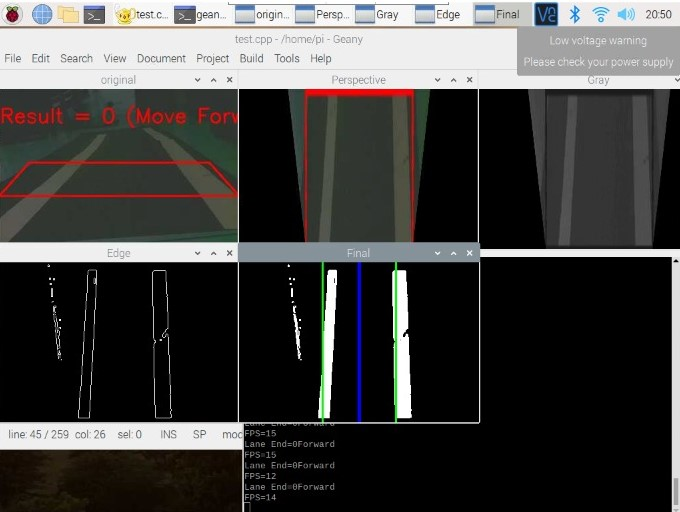

provide microphone access, for more functionality
The voice assistant implemented in this project offers a wide range of functionalities aimed at providing users with a hands-free experience that simplifies many daily tasks. Users can perform various actions, such as performing searches, reading news, playing music, setting reminders, and getting weather information, among others, simply by speaking to their virtual assistant.
Additionally, the voice assistant can interact with users using natural language processing and speech recognition technologies, making the experience more intuitive and user-friendly. The integration of various APIs and libraries enables the voice assistant to understand and interpret user input accurately, providing a seamless and efficient user experience. Overall, the functionalities offered by this voice assistant aim to simplify many tasks and enhance productivity by enabling users to interact with technology in a more natural and intuitive way.

Click on the button below to activate your microphone
| Sample Commands | Song Commands | FM Commands |
|---|
Please be advised the code is experimental and just an limited feature imitation of the original program
ongoing
The Advanced Biped Robot with Voice Assistant and Facial
Detection project is a ground-breaking endeavour that aims to develop a highly
advanced robotic system by seamlessly integrating sophisticated locomotion
capabilities, voice interaction, and facial recognition technology. This
project brings together cutting-edge technologies to create a versatile robot
that can perform a wide range of tasks while providing users with an intuitive
and personalized experience.
At the heart of this project is the biped robot,
meticulously designed with 13 degrees of freedom to mimic human locomotion with
exceptional agility and adaptability. This advanced mobility empowers the robot
to navigate diverse environments and conquer various terrains, offering
enhanced versatility and practicality. It is also integrated with Ultron
and FaceGuard technology.
The primary objective of this project is to create a
versatile robotic system that effortlessly integrates advanced locomotion,
voice interaction, and facial recognition capabilities. By doing so, the robot
aims to simplify daily tasks, boost productivity, and provide an engaging and
personalized user experience. Furthermore, this project holds immense potential
for driving further research and development in the field of human-robot
interaction, propelling the advancement of robotics and artificial intelligence.

This software utilizes computer vision techniques to capture facial images, train a facial recognition model, and subsequently recognize users based on their faces. The software is implemented in Python using the OpenCV library.The main functionalities of the software are as follows:
The code utilizes external libraries such as NumPy, Pillow (PIL), and custom modules (my_assistant.shared, talk, and listen) to provide additional functionalities related to speech synthesis and speech recognition.
The proposed vehicle is programmed to navigate autonomously by detecting and implementing the following:
The main objective was to be able to identify and minimize accidents by predicting user driving patterns, however, since the project was self funded it has been optimized to accomodate maximum features on a cost-effective scale.
 The designed system utilizes various sensors to measure the heart rate, SpO2, ambient skin temperature, body temperature, blood pressure, and muscle movements (in the case of coma patients) and monitor the surrounding conditions as well. Apart from the novelty of integrating multiple sensors, the system can also send live video feedback of the patient to a webpage created to keep track of the patient’s condition.
The product's features are designed for data storage, display, and communication. This framework gives better medical care administrations to patients and the data is gathered through the web and specialized gadgets thus associated with cloud administrations. By utilizing this strategy the doctor can check his patient anywhere. If the obtained current value exceeds or falls below the threshold value, an emergency alert message will be sent to a doctor and the enlisted family point-of-contact. This framework is useful for patients who might require medical care at all hours of the day and night. The product is cost-effective, dependable, portable, and simple to operate.
The
bionic claw is a low cost alternative for a full functional prosthetic arm and an upgrade for the showpiece prosthetics. The claw can successfully grasp cylindrical and cubical surfaces and research is furthered in the domain of precision grab to emulate a human grasp. We have also been able to integrate 3 modes of control along with a wrist movement emulated by a joystick:
a) The keypad control can either open/close the claw entirely, open/close the claw gradually and can direct the servos to the preset gestures the user has set.
b) The potentiometer control can either open/close in a more precise manner, thus giving the user more control over the claw movement.
c) The autonomous control utilizes the myo-signals received from the myoware emg sensor and maps it to an analog value the servo can comprehend and can hence open or close based on the stress that is applied by the user's muscle. However, with the utilization of more sensors, refined analog values can be obtained from the user's hand.
The claw is also retrofitted with an inbuilt health monitoring system that can monitor the vitals of the user at any given time, and we are also looking forward to build a cyberpunk version of the arm with more functionalities to further the user with several tasks in their day to day life.